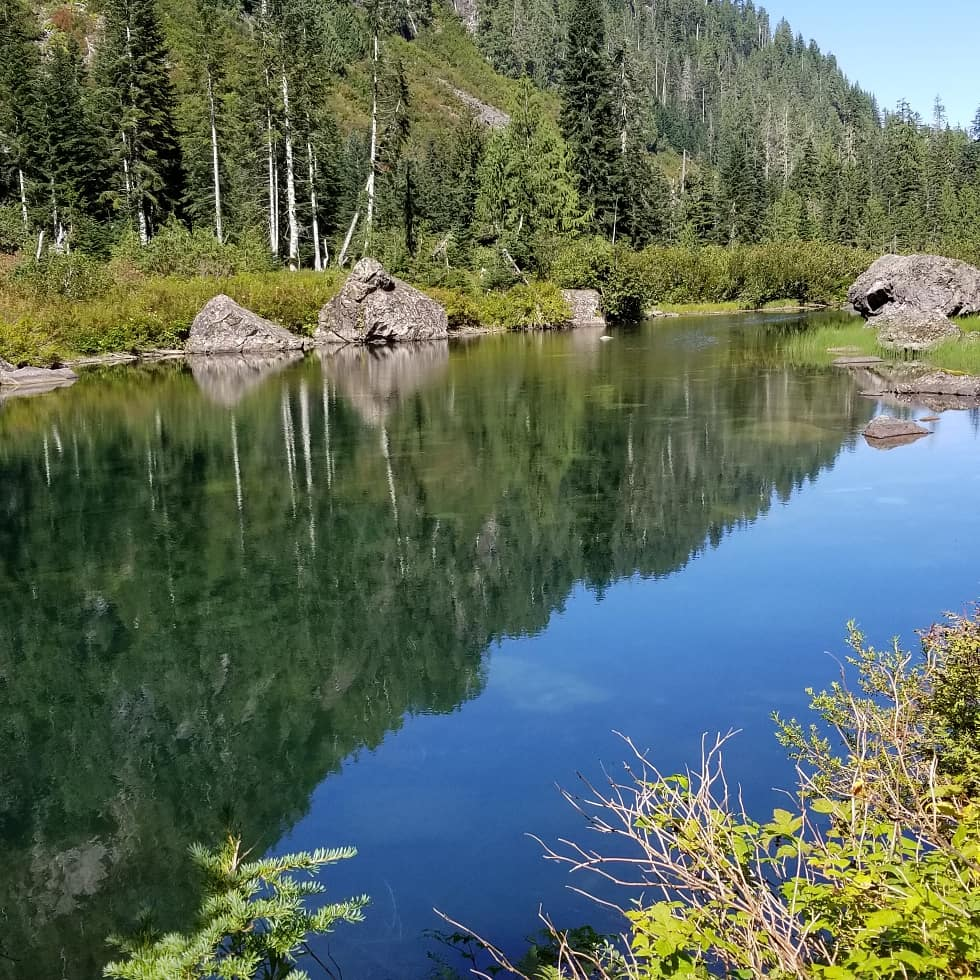
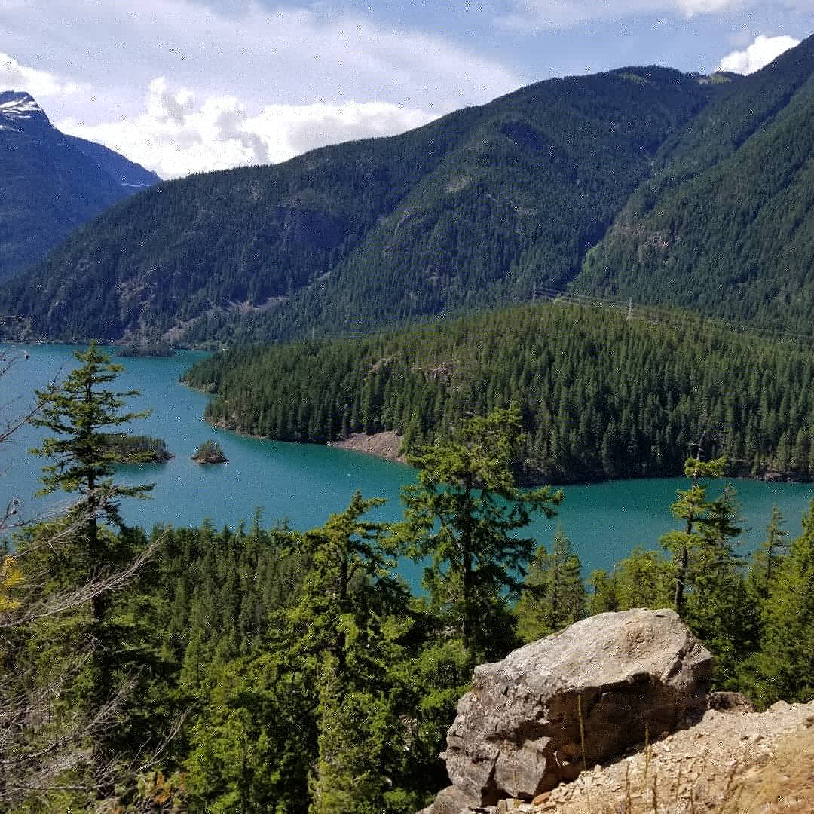

Good exercise and amazing views, what more could you want?
One of my favorite hobbies is hiking. The nature around us is wonderous and beautiful. I am very fortunate to be living in the PNW, where our mountains, forests and lakes are plentiful. I love hiking I always enjoy exploring new hikes and traversing the obstacles (except the potholes on the roads). The best part is the satisfaction when you reach the peak, you get to relax and enjoy the gorgeous sunset over the lake. It is also a great experience to share together with your friends and family. You can find some of my more memorable hikes pictured below.
- Heather Lake Trail
A frustrating drive through a road of potholes was well worth it when we reached the peak of this hike. It was much shorter than the usual hikes but the view was just as great
 - Diablo Lake
A well known and very popular trail. Diablo Lake is a very large lake surrounded by forests and mountains. It seems impossible to get to a peak where you aren't dwarfed by a nearby mountain. It's a much more difficult trail than Heather Lake. However, if you feel like skipping the fun part, you can visit the Diablo Lake Vista Point and enjoy the view of the lake from there.
